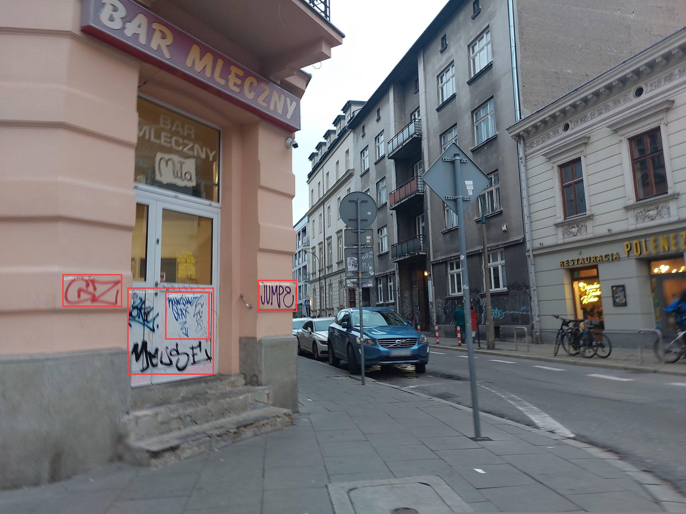
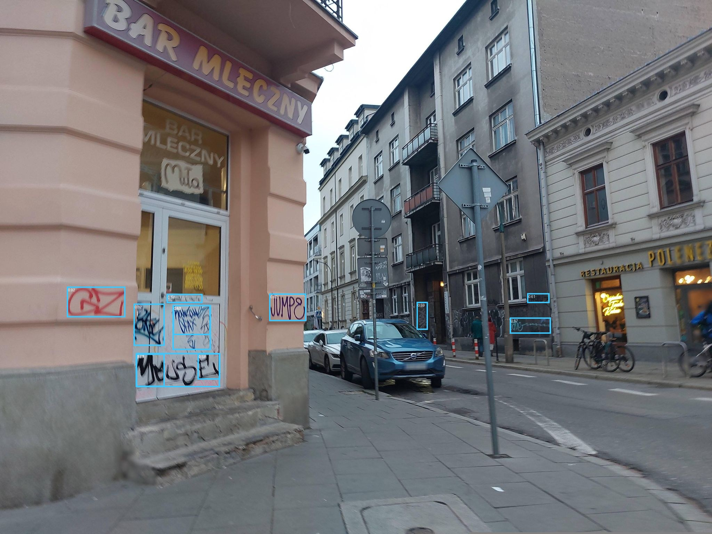
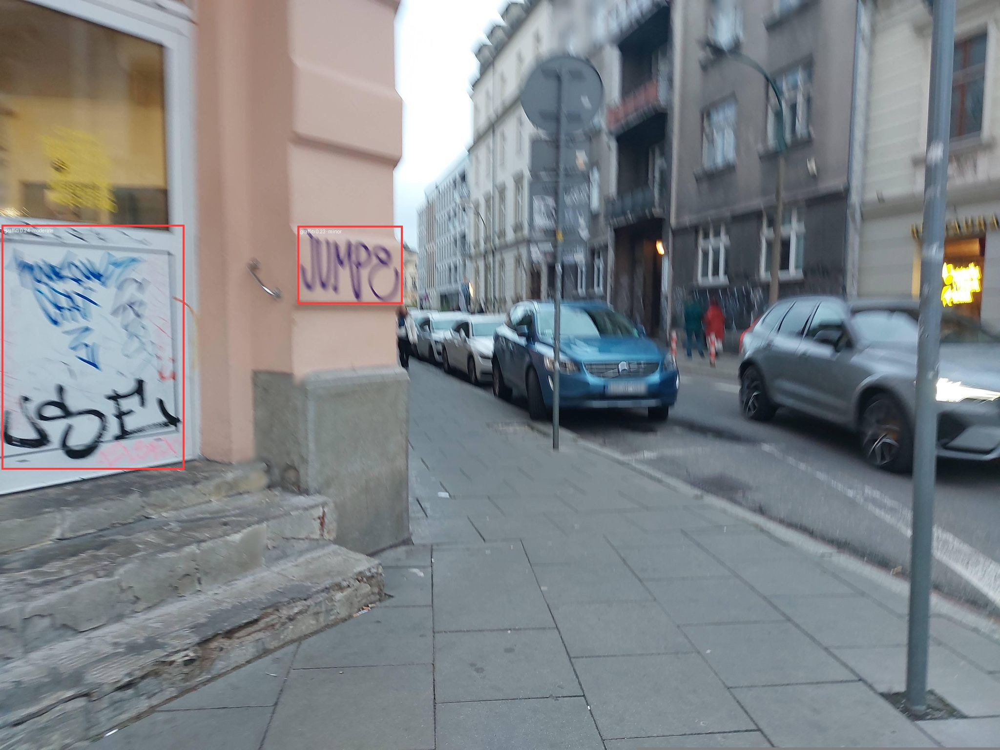
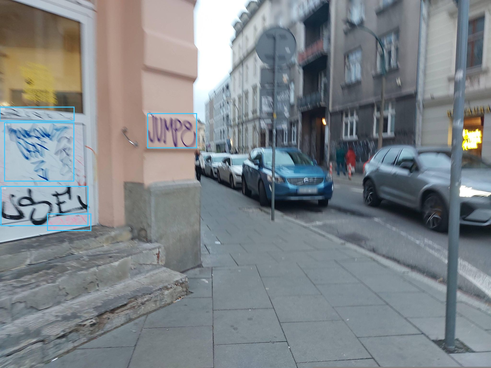
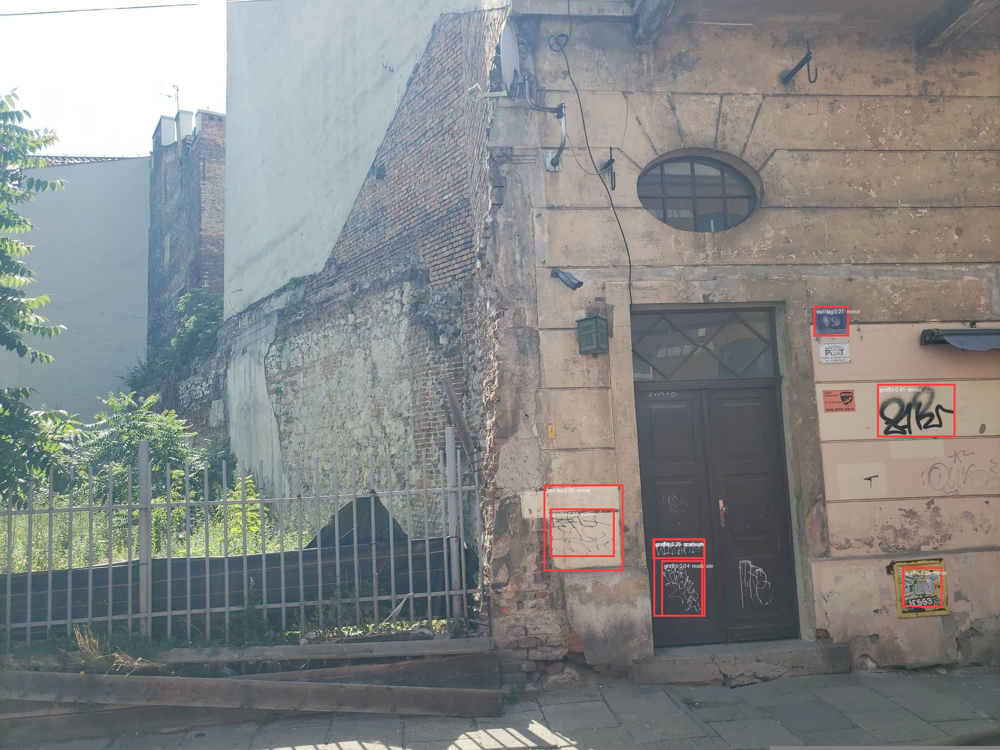
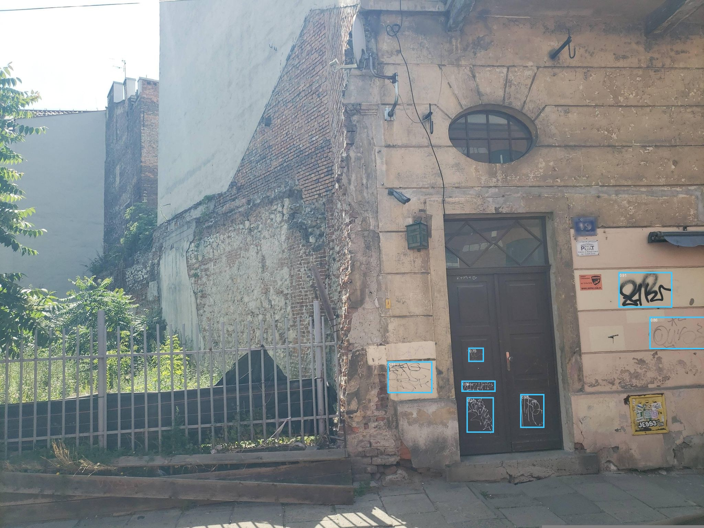
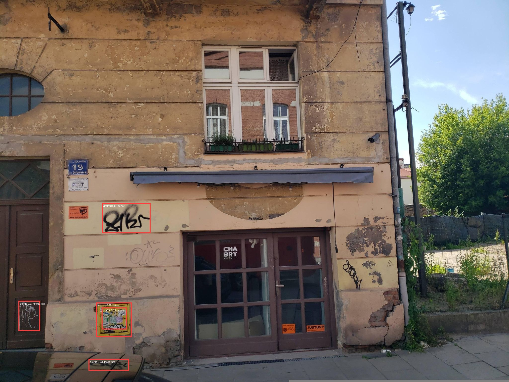
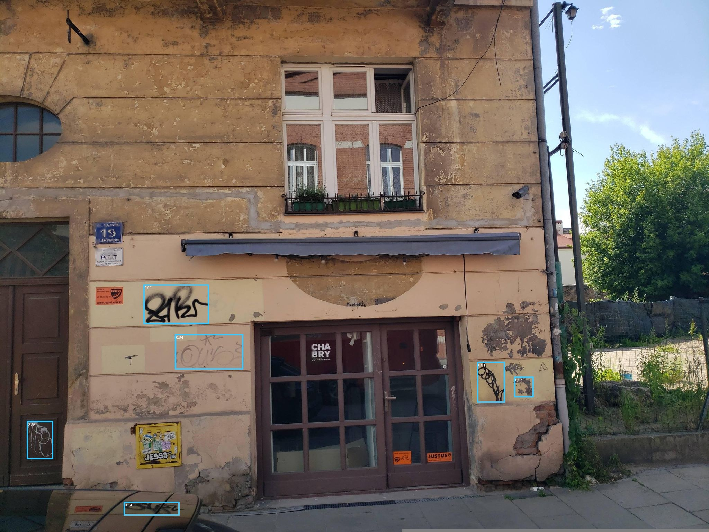
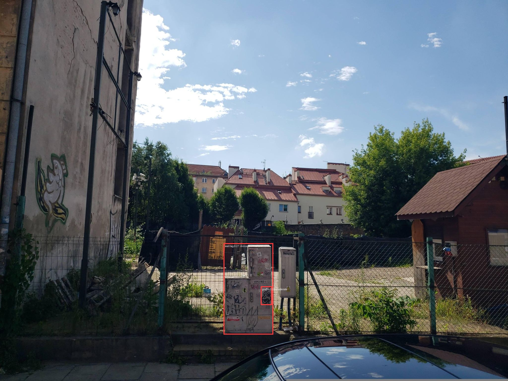

GroundingDINO+CLIP (red boxes) mlx-sam3 (cyan boxes, score ≥ 0.55)
| image | GroundingDINO + CLIP | mlx-sam3 |
|---|---|---|
| 3689129454680282 |  4 dets · threshold 0.2 |
 12 kept of 21 (≥ 0.55) · 848ms |
| 1237359060636431 |  2 dets · threshold 0.2 |
 5 kept of 12 (≥ 0.55) · 657ms |
| 453477123994712 |  8 dets · threshold 0.2 |
 7 kept of 9 (≥ 0.55) · 653ms |
| 972146901074126 |  5 dets · threshold 0.2 |
 6 kept of 10 (≥ 0.55) · 652ms |
| 441112288652120 |  2 dets · threshold 0.2 |
9 kept of 18 (≥ 0.55) · 654ms |